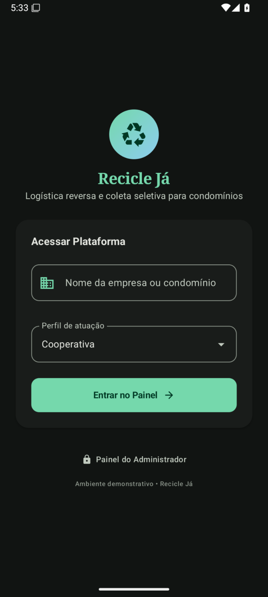
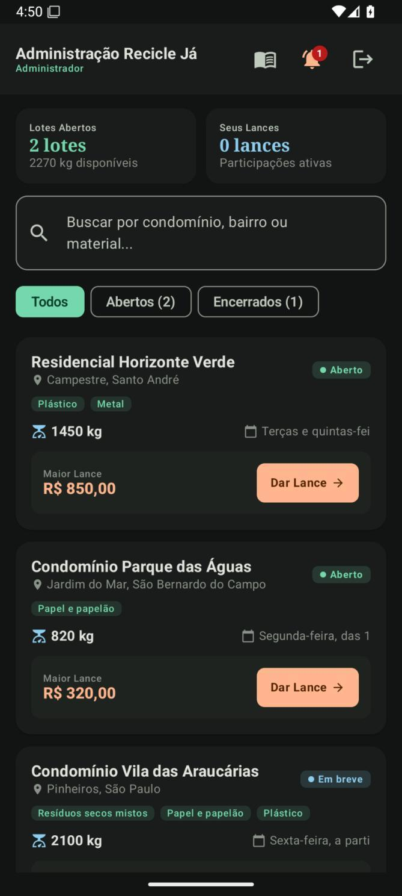
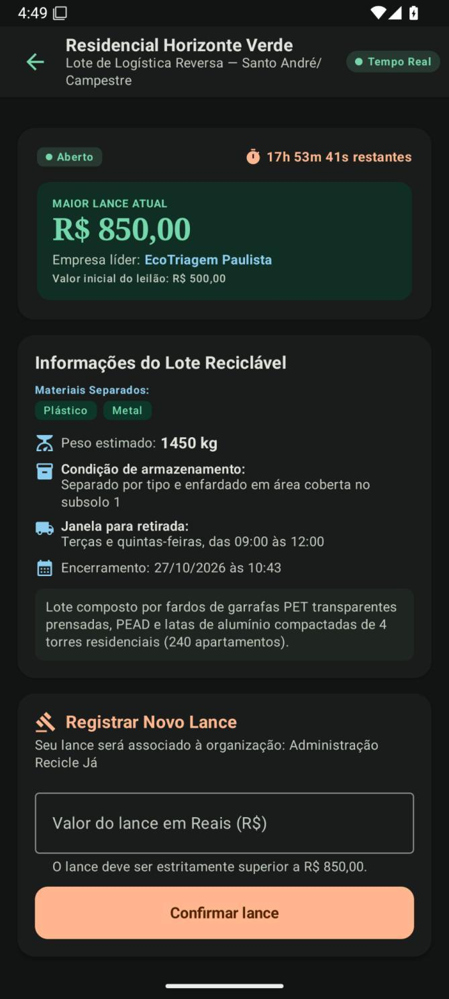
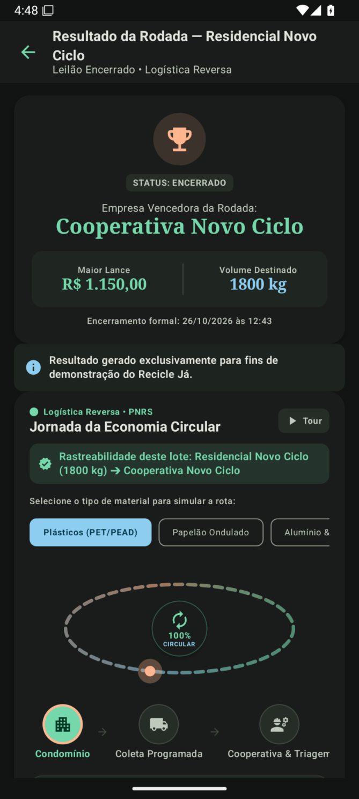
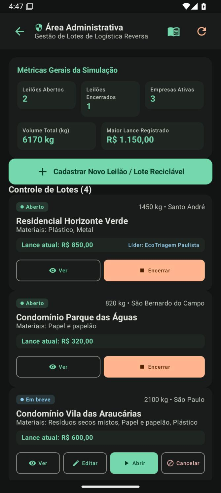
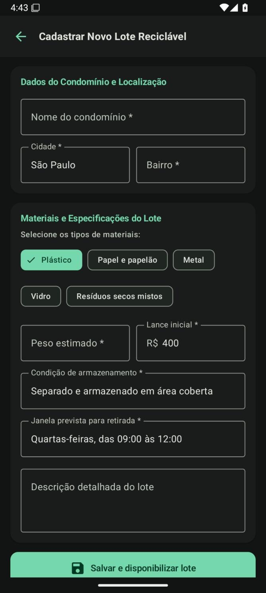

Gestão condominial
Adesão, responsáveis internos, volumes de recicláveis, coletas realizadas e relatórios de desempenho.
Protótipo demonstrativo · Proposta conceitual
Logística reversa e coleta seletiva para condomínios residenciais, conectando moradores, síndicos, cooperativas de catadores, prefeituras e indústria recicladora.

Existe coleta convencional em grande parte das cidades, mas isso não garante que os recicláveis voltem à cadeia produtiva.
Fonte: ABREMA, Panorama dos Resíduos Sólidos no Brasil 2025 (dados de 2024).
Uma plataforma digital que organiza a cadeia da coleta seletiva e registra cada etapa, do condomínio à destinação industrial.
Adesão, responsáveis internos, volumes de recicláveis, coletas realizadas e relatórios de desempenho.
O condomínio publica lotes de materiais e cooperativas, recicladoras e coletores enviam ofertas. O histórico da rodada fica registrado.
Cooperativas cadastram lotes triados, com tipo de material, pureza, volume e documentação, para negociação com recicladoras.
Consolida lotes, massa estimada, valores ofertados e situação das rodadas para acompanhamento.
Orientações de descarte, materiais aceitos, lembretes e devolutivas sobre os volumes destinados.
Agrupamento de coletas entre condomínios próximos, considerando volume, capacidade e janelas de atendimento.
Fluxo funcional da demonstração, a partir da identificação do usuário.
O administrador vai ao painel do condomínio. O participante vai ao catálogo de lotes disponíveis.
O administrador informa o material acumulado, peso estimado, oferta mínima, prazo da rodada e janela de coleta.
Cooperativas, recicladoras e coletores filtram oportunidades, consultam a ficha do lote e registram ofertas. A maior oferta é atualizada durante a rodada.
O sistema identifica o vencedor e reúne dados para agendar a retirada, conferir o peso e registrar a movimentação.
Limites do protótipo: não emite documentos oficiais, não executa pagamentos e não formaliza contratos. Essas integrações dependem de validação operacional e jurídica.
Capturas das jornadas implementadas: participante comprador e administrador do condomínio. Clique em uma imagem para vê-la em tamanho real.





Estágio atual: protótipo demonstrativo. Ainda não houve validação com usuários, pesquisa de campo, piloto ou operação com dados reais.
Produções acadêmicas e comerciais do projeto, desenvolvidas no curso de Pós-Graduação em Gestão de Projetos em Inovação e Sustentabilidade (São Bernardo do Campo, SP, julho de 2026).
Proposta conceitual do Recicle Já: condomínios residenciais como vetor de ampliação da coleta seletiva na região Sudeste.
Abrir PDFTítulo comercial, modelo de monetização, clientes, proposta de valor e diferenciais competitivos.
Abrir PDFAutores: Giuliano Ferreira dos Santos, Antonio Renato Stivale, Luiz Gustavo de Freitas, Gabriel Menezes Moreira e João Henrique Delibaldo. Orientadora: Cristina Chiyoda Koshima.